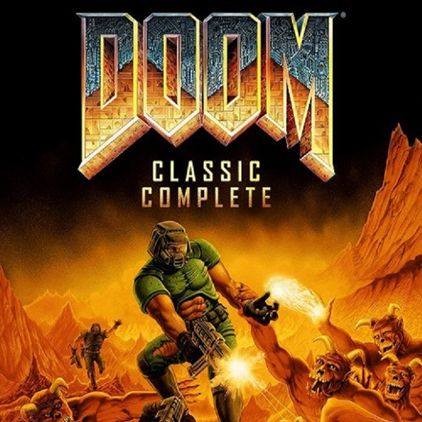

Good ole' Days
This is just a general list of all the newer games, and the impact they are having on games today.
Recently released, and already contending for GOTY Metal Gear 5 gives the player true freedom to roam around and do whatever they want. Want to raid a base? Go for it. Want to do it in the middle of the day? Sure. Want to go in under the cover of a storm? Go for it. This is just a simple way of looking at it, but the game offers a freedom not known yet to gaming. I'll also admit, it looks pretty sweet.
Another personal favorite, it combines the classic zombie killing action, with one of the most advanced gore systems known to gaming (as of 2015.) Still in Early Access on Steam, the game is already in a playable state, that ha vey few bugs at all in it. Constantly being updated as well, Tripwire Interactive knows just how to keep the fanbase returning to their game.
Created by CD Projekt Red, the Witcher 3 is one of the few RPG's that truly looked at the choice/consequence system that Deus Ex had, and actually implemented it. I could go so far as to say it's one of the best modern day RPG's out there, one that will be looked back on as being truly groundbreaking and revolutionary.